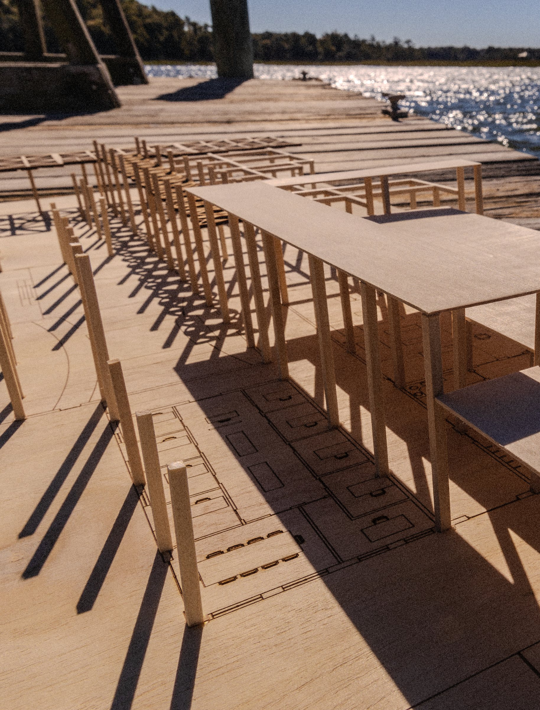
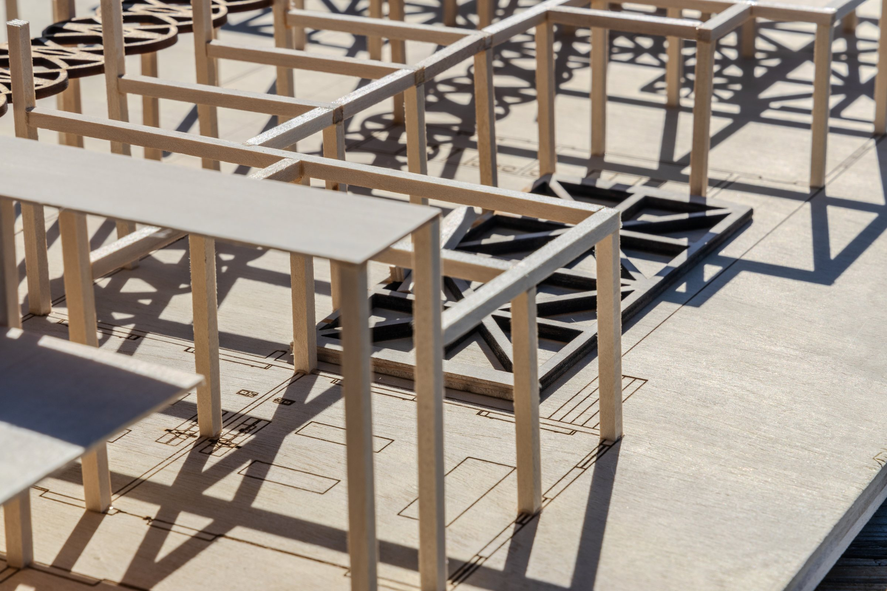
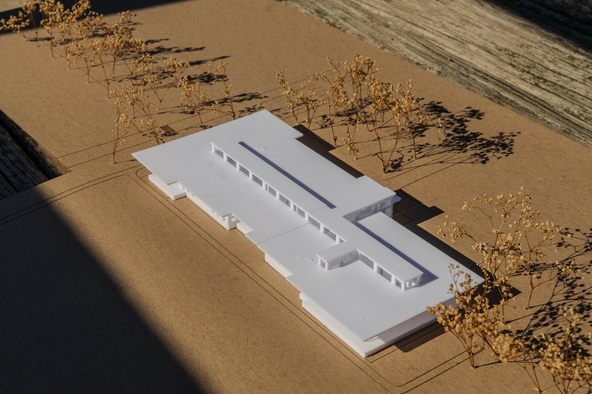

Project 02
Hastings Gantt Coastal Center

Located on the West side of Penn Center campus, situated on the Southeast corner of the existing vineyard, is a large multipurpose building built as a testament to Hastings Gantt, who made the Penn School possible. At its roots, this building intends to revitalize the purpose of Penn School's founding as a place of learning. Considering the longevity of Penn Center, the building weaves culture with sustainability, utilizing historic techniques of the southern vernacular while incorporating innovative contemporary methods like mass timber.


Massing


Physical Models


